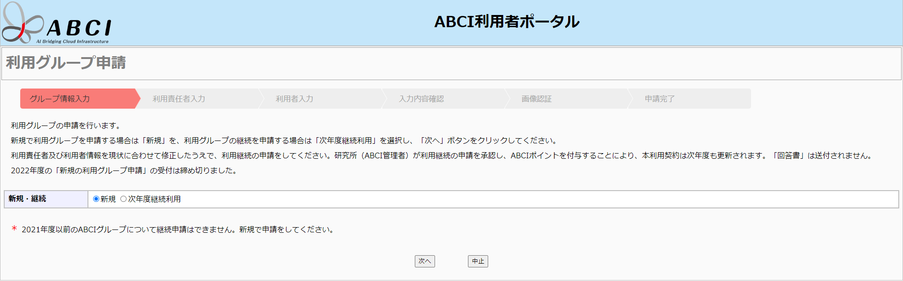
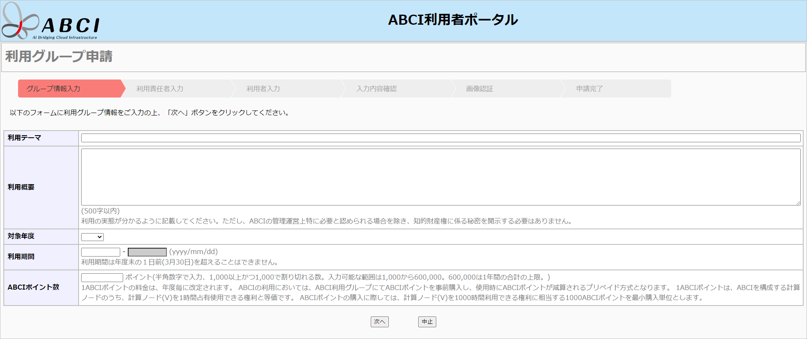
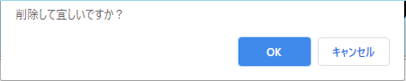
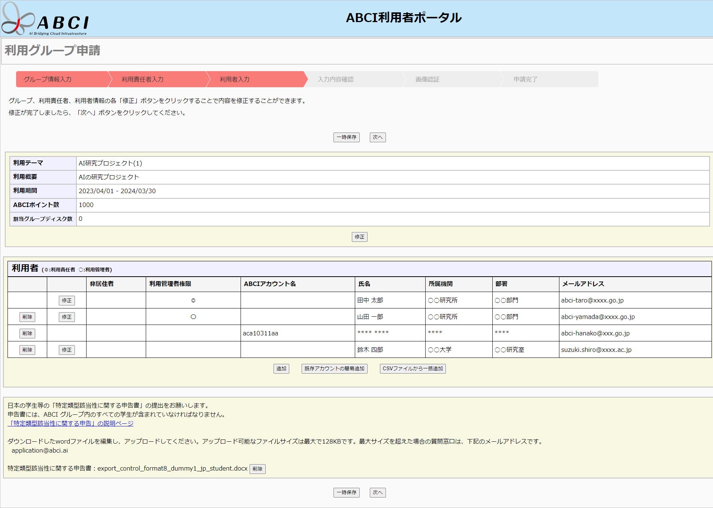
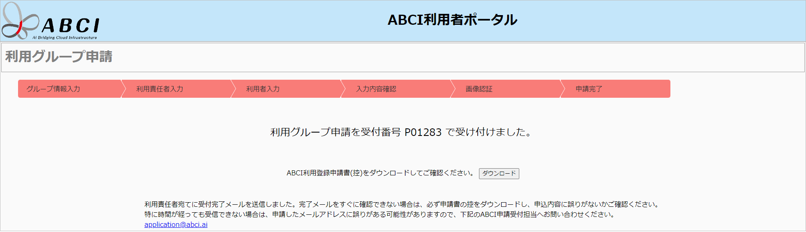

1. 利用グループ新規申請
利用ポータルの利用グループ申請にアクセスします。
1.1. 利用規定への同意
![[[Screenshot]]](../img/1_01_A.png)
利用規定を参照し、同意する場合は[同意する]を選択します。
また、本人確認依頼を参照し、同意する場合は[全てに同意して次へ進む]をクリックします。
Note
利用規定は、下記のURLにて参照可能です。
https://abci.ai/ja/link/download_etc.html
1.2. 申請種別選択

「新規」を選択して[次へ]をクリックします。
1.3. グループ情報入力

各項目を入力して[次へ]をクリックします。
1.4. 利用責任者入力
![[[Screenshot]]](../img/1_04_A.png)
利用責任者について各項目を入力して[完了]をクリックします。
「*」マークが付いているものは必須項目です。
国外の機関に所属している場合は、「国外所属機関」の該当する項目を選択してください。
非居住者チェックリストが必要な場合はアップロードしてください。
Note
ABCIアカウントが空白の場合、利用申請承認時にシステムにより自動発行されます。
1.5. 利用者入力
![[[Screenshot]]](../img/1_05_A.png)
[追加]をクリックすると利用者入力画面に遷移します。
![[[Screenshot]]](../img/1_05_B.png)
グループに参加する利用者について各項目を入力して[完了]をクリックします。
「*」マークが付いているものは必須項目です。
国外の機関に所属している場合は、「国外所属機関」の該当する項目を選択してください。
非居住者チェックリストが必要な場合はアップロードしてください。
Note
ABCIアカウントが空白の場合、利用申請承認時にシステムにより自動発行されます。
![[[Screenshot]]](../img/1_05_C.png)
入力した利用者の一覧が表示されます。
ABCIアカウントを取得済みの利用者を追加する場合は、[既存アカウントの簡易追加]をクリックし、ABCIアカウント名入力画面に遷移します。
![[[Screenshot]]](../img/1_05_D.png)
登録済みのABCIアカウント名とメールアドレスを入力して[完了]をクリックします。
利用管理者として登録する場合は「管理者権限の有無」をチェックしてください。
簡易追加で入力した利用者の一覧が表示されます。
簡易追加で入力した利用者の場合、氏名、所属機関等が「****」と伏字で表示されます。
複数の利用者を一括で追加する場合は、[CSVファイルから一括追加]をクリックし、CSVファイル選択画面に遷移します。
「一括追加用ファイルフォーマットダウンロード」からCSVファイルをダウンロードし、各項目を入力したファイルを「ファイルを選択」で選択してください。
ファイルを選択後、[一括追加]をクリックします。
一括追加で入力した利用者の一覧が表示されます。
一覧上の[修正]をクリックすると対象の利用者情報を修正することができます。
一覧上の[削除]をクリックすると確認ダイアログが表示されます。削除する場合は[OK]をクリックします。

[次へ]をクリックすると確認画面に遷移します。
1.6. 入力内容確認
![[[Screenshot]]](../img/1_06_A.png)
簡易追加で入力した利用者の場合、氏名、所属機関等が「****」と伏字で表示されます。
入力内容を確認して[次へ]をクリックすると画像認証画面に遷移します。
入力内容を修正する場合は[修正]をクリックすると修正用の一覧画面に遷移します。
1.7. 入力内容修正

修正画面では、入力したグループ・利用責任者・利用者の情報を修正することができます。
各項目の[修正]をクリックすると修正用の画面に遷移します。
また、利用者は[削除]をクリックするとその行の利用者情報を削除でき、[追加]をクリックすると追加用の入力画面に遷移します。
[削除]をクリックすると確認ダイアログが表示されます。削除する場合は[OK]をクリックします。
[一時保存]をクリックすると一時保存の申請画面に遷移します。
1.8. 画像認証
![[[Screenshot]]](../img/1_08_A.png)
画像中の数字6文字を入力し[申請]をクリックします。
数字が読めない場合は[リロード]をクリックして画像を変更してください。
1.9. 申請完了

以上で新規登録の受付は完了です。上記メッセージの表示後、すぐに受付完了メールが利用責任者宛てに送られます。しばらく待ってもメールが届かない場合は、申請したメールアドレスに誤りがある可能性がありますので、ABCI申請受付担当(abci-application-ml@aist.go.jp)までお問い合わせください。
後日申請が承認されると、利用責任者宛にメールで通知されます。
1.10. 利用グループ申請一時保存
利用者入力画面、及び入力内容修正画面で[一時保存]をクリックします。
1.10.1. 画像認証
画像中の数字6文字を入力し[次へ]をクリックします。
数字が読めない場合は[リロード]をクリックして画像を変更してください。
1.10.2. 通知用メールアドレス設定
メールアドレスとパスワードを入力して[次へ]をクリックします。
ここで設定するメールアドレスとパスワードは、入力を再開する際にのみ使用されます。
![[[Screenshot]]](../img/1_10_C.png)
入力したメールアドレス宛に再開用のURLが通知されます。
申請を再開する場合は、再開用のURLより行って下さい。
1.10.3. 認証用パスワード入力
パスワードを入力して[次へ]をクリックします。
入力内容修正画面から再開することができます。
1.11. 差し戻しされた申請の再申請
申請内容に不備があった場合、差し戻しされる場合があります。
差し戻しされると、利用責任者のメールアドレス宛てに差し戻し理由と再申請用のURLが通知されます。
再申請をする場合は、再申請用のURLから行って下さい。
入力内容修正画面から差し戻し理由を修正し、再申請することができます。